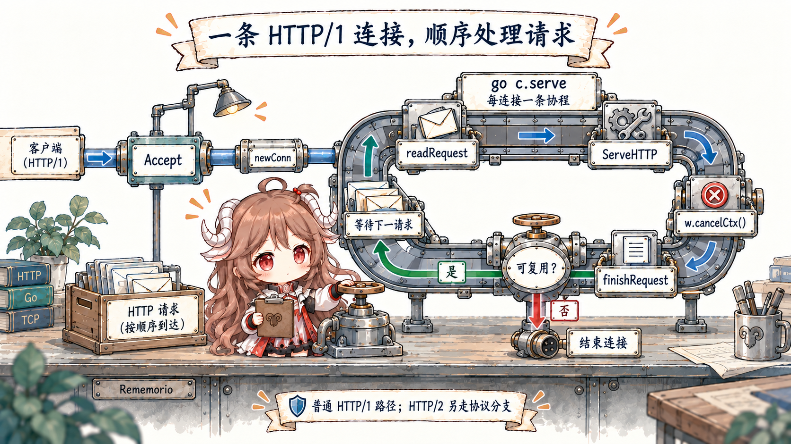
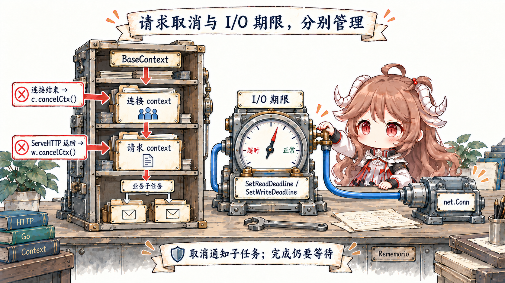
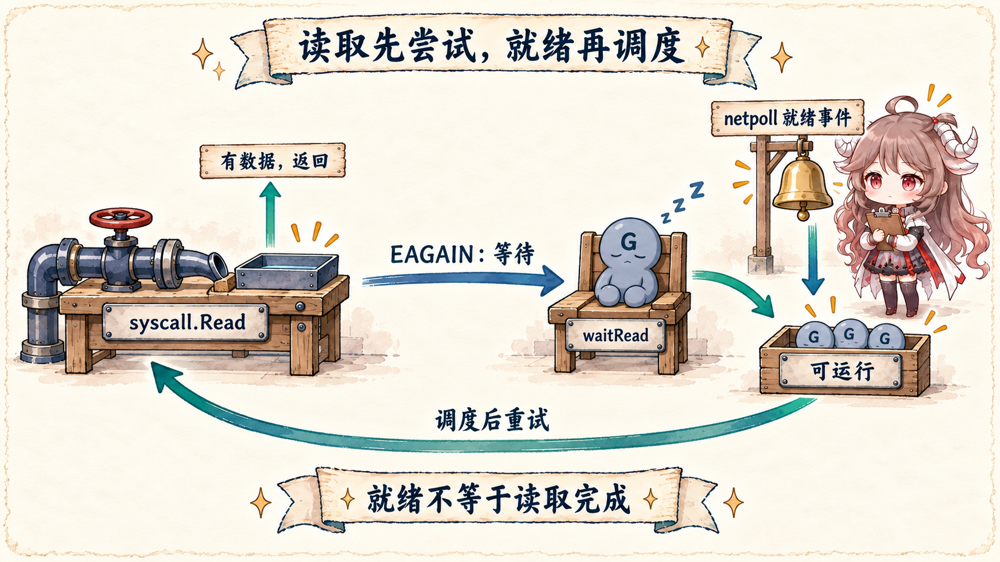

场景只有一个。我们写一个小服务 fetchd：调用方传进一组 URL，handler 为它们并发发起 HTTP 请求，
在统一 deadline 下收集状态码和响应大小，再返回 JSON。它小到可以逐行读完，又包含真实服务最常见的边界：
入站连接、请求 context、业务 goroutine、出站连接池、socket 等待和响应写回。
阅读契约：先记住全文的主结论：应用代码看到的是阻塞式函数调用，标准库和 runtime 负责把“等待网络”从执行线程上卸下来。
同时，net/http 把连接、请求和出站交换拆成不同生命周期；看清 owner，才能解释取消、超时、泄漏和尾延迟。
证据边界先说明。本文以 Go 1.26.0 固定 tag 的公开源码为直接证据，API 契约参考 net/http 文档、 context 文档和 Go diagnostics 文档。 主线限定为普通 HTTP/1.x 服务与非阻塞网络描述符；HTTP/2 会在 ALPN 或 alternate RoundTripper 处分流， Windows IOCP、BSD/macOS kqueue 与 Linux epoll 的平台实现也不同。文中用 Linux epoll 展示一种具体落地， 不把它冒充所有平台的共同源码。
这篇要让一位刚打开 Go 源码的读者回答五个问题：
Server.Serve创建的是“每请求一个 goroutine”，还是“每连接一个 goroutine”？Request.Context()从哪里来，handler 返回后又是谁取消它？- handler 里的
client.Do怎样拿到或建立一条可复用连接？ Read没有数据时，goroutine、线程和文件描述符分别处于什么状态？- 遇到慢请求时，应该先看 handler、连接池、netpoll、调度还是 GC？
一、先按 owner 拆开这条请求
“一次请求”是用户视角，不是源码里的单一对象。进入进程后，它至少跨过四种 owner。 每个 owner 持有不同状态，也在不同时间结束。
| 层 | 主要 owner | 拥有的状态 | 典型结束条件 |
|---|---|---|---|
| 入站监听 | http.Server |
listener、server 配置、accept loop | Close / Shutdown 关闭监听 |
| 连接 | net/http.conn |
socket、buffer、TLS、keep-alive 状态 | 对端关闭、协议错误、idle timeout、服务关闭 |
| 请求 | response + handler |
Request、请求 context、响应状态 |
ServeHTTP 返回或连接终止 |
| 出站交换 | Transport + persistConn |
连接池、dial、读写循环、response body | 响应体关闭/读完、取消、连接失效 |
| 网络等待 | internal/poll + runtime |
poll descriptor、等待中的 goroutine、就绪事件 | I/O 就绪、deadline、描述符关闭 |
这张表也是后面排障的索引。连接数涨，不等于 goroutine 一定泄漏；请求 context 结束，不等于 TCP 连接不能复用；
goroutine 处于 IO wait，也不等于它正在消耗一个操作系统线程。先找 owner，再谈现象。
// 本系列持续使用的请求形状
GET /fetch?url=https://go.dev/&url=https://pkg.go.dev/net/http
incoming request
├─ request deadline: 1.5s
├─ child goroutine: fetch go.dev
├─ child goroutine: fetch pkg.go.dev
└─ JSON aggregation二、先让 fetchd 真正跑起来
完整示例在仓库的 go-runtime/examples/fetchd。 核心 handler 没有引入第三方包：它从入站请求派生一个 1.5 秒 context，启动有界数量的 goroutine， 每个 goroutine 都把同一个 context 交给出站请求。
func (h fetchHandler) ServeHTTP(w http.ResponseWriter, r *http.Request) {
targets := r.URL.Query()["url"]
ctx, cancel := context.WithTimeout(r.Context(), h.timeout)
defer cancel()
results := make(chan fetchResult, len(targets))
for _, target := range targets {
go h.fetch(ctx, target, results)
}
batch := make([]fetchResult, 0, len(targets))
for range targets {
batch = append(batch, <-results)
}
json.NewEncoder(w).Encode(batch)
}
这里有三个刻意保留的约束。第一，URL 数量最多八个，否则“每个输入开一个 goroutine”会变成无界放大器。
第二，结果 channel 的容量等于任务数；即使 handler 因未来改动提前返回，子任务在发送结果时也不会立刻互相卡死。
第三，出站请求使用 NewRequestWithContext，所以入站取消能沿着调用树走进 Transport。
transport := http.DefaultTransport.(*http.Transport).Clone()
transport.MaxConnsPerHost = 16
transport.MaxIdleConnsPerHost = 8
transport.IdleConnTimeout = 90 * time.Second
transport.ResponseHeaderTimeout = time.Second
server := &http.Server{
Addr: ":8080",
Handler: handler,
ReadHeaderTimeout: 2 * time.Second,
WriteTimeout: 3 * time.Second,
IdleTimeout: 60 * time.Second,
}这些不是“生产最佳参数”，而是把边界显式化：服务端限制读请求头、写响应和空闲连接；客户端限制每个目标的连接数、 空闲连接和响应头等待。具体数值必须由流量、上游 SLO、响应体大小和重试策略决定。
三、Server.Serve 接受的是连接
ListenAndServe 只做两件关键事情：net.Listen("tcp", addr)，然后把 listener 交给
Server.Serve。真正的并发边界在 Serve 的 accept loop。
// net/http/server.go，压缩到主路径
ctx := context.WithValue(baseCtx, ServerContextKey, s)
for {
rw, err := l.Accept()
// shutdown 与临时 accept 错误处理省略
connCtx := ctx
if cc := s.ConnContext; cc != nil {
connCtx = cc(connCtx, rw)
}
c := s.newConn(rw)
c.setState(c.rwc, StateNew, runHooks)
go c.serve(connCtx)
}
这里的 go 位于 c.serve 前面，所以最直接的事实是：HTTP/1 的基本 service goroutine 按连接创建，
不是按请求创建。 一个客户端如果在同一 TCP 连接上依次发送十个 keep-alive 请求，默认会复用这个连接的 service goroutine。
十条同时建立的连接，则会有十条对应的 c.serve 路径。

HTTP/1 handler 为什么直接跑在连接 goroutine 里
进入 conn.serve 后，源码完成 TLS 分流和 buffer 初始化，再进入 HTTP/1 循环。
关键调用不是 go handler.ServeHTTP(...)，而是直接调用：
for {
w, err := c.readRequest(ctx)
// 请求解析与错误响应省略
inFlightResponse = w
serverHandler{c.server}.ServeHTTP(w, w.req)
inFlightResponse = nil
w.cancelCtx()
w.finishRequest()
if !w.shouldReuseConnection() {
return
}
c.setState(c.rwc, StateIdle, runHooks)
c.bufr.Peek(4) // 等下一条请求真正到来
}
源码注释直接解释了取舍：HTTP/1 在回复当前请求前不能并行读取下一条普通请求，所以没有必要再为 handler 多开一层 goroutine。
业务代码当然可以像 fetchd 一样自行创建子 goroutine，但这已经是 handler 自己拥有的并发；
它必须自己限制数量、传播取消并回收结果。HTTP/2 的多路复用不走这段简单循环，不能把这个结论原样套过去。
panic 边界也属于连接 owner
conn.serve 顶部有一个 defer：普通 panic 会被恢复、记录当前 goroutine 的栈，然后关闭未 hijack 的连接；
ErrAbortHandler 是刻意不打印栈的特殊信号。这个恢复点保护的是 net/http 的连接服务循环，
不是一张能让业务状态自动回滚的事务网。handler 已经写出的外部副作用仍然需要业务自己处理。
四、Request.Context 是怎样被装进去、再被取消的
看请求取消，不能只从业务代码里的 r.Context() 开始。它上面还有连接 context，下面还有出站请求；
源码用嵌套 context 把生命周期接起来。

readRequest 创建请求级 cancel 函数
Server.Serve 从 BaseContext 得到根，ConnContext 可以为每条连接附加值；
conn.serve 再执行一次 context.WithCancel，并在连接服务结束时 defer cancel。
读完并校验请求头后，readRequest 创建更内层的请求 context：
ctx, cancelCtx := context.WithCancel(ctx)
req.ctx = ctx
req.RemoteAddr = c.remoteAddr
req.TLS = c.tlsState
w = &response{
conn: c,
cancelCtx: cancelCtx,
req: req,
reqBody: req.Body,
// ...
}
cancel 函数没有暴露给 handler，而是保存在 response 中。handler 返回后，连接循环明确调用
w.cancelCtx()。这就是为什么从 handler 启动的后台工作如果继续持有请求 context，会在 handler 返回后观察到
Done 关闭。要做真正脱离请求的 durable work，应该交给有独立生命周期的队列或 worker，而不是偷偷忽略取消。
取消、请求 deadline 与 socket deadline 不是一个东西
fetchd 用 context.WithTimeout 明确给业务树增加 1.5 秒 deadline；
http.Server.ReadHeaderTimeout 和 WriteTimeout 则由 readRequest 计算后调用
SetReadDeadline / SetWriteDeadline，最终作用在连接 I/O 上。
后者不保证 r.Context().Deadline() 一定出现同一个时间点。
| 信号 | 谁设置 | 谁首先观察 | 代码应该怎么做 |
|---|---|---|---|
| 请求 context 取消 | handler 返回、客户端断开或上层主动 cancel | 等待 ctx.Done() 的业务与 Transport |
停止派生工作，返回 context.Cause 对应结果 |
| 业务 deadline | context.WithTimeout |
context tree | 给整条业务调用树一个预算 |
| I/O deadline | http.Server / net.Conn |
socket read/write | 把网络等待变成 timeout error，不替代业务取消 |
五、handler 之后，出站请求怎样进入 Transport
serverHandler.ServeHTTP 的职责很薄：选择显式配置的 Server.Handler，为空时使用
DefaultServeMux，最后调用 handler.ServeHTTP。
对 fetchd 来说，从这里开始进入我们的 handler，再走到 h.client.Do(req)。
func (sh serverHandler) ServeHTTP(rw ResponseWriter, req *Request) {
handler := sh.srv.Handler
if handler == nil {
handler = DefaultServeMux
}
handler.ServeHTTP(rw, req)
}RoundTrip 先拿连接，再交给协议路径
Client.Do 还会处理 redirect、cookie 等高层行为；真正的一次 HTTP exchange 落到
Transport.RoundTrip。Go 1.26 的公开方法只校验 receiver 后进入内部 roundTrip。
主循环先检查请求和 context，再计算连接方法、取得连接，最后选择 HTTP/2 alternate path 或 HTTP/1 persistConn。
for {
select {
case <-ctx.Done():
return nil, context.Cause(ctx)
default:
}
treq := &transportRequest{Request: req, ctx: ctx, cancel: cancel}
cm, err := t.connectMethodForRequest(treq)
pconn, err := t.getConn(treq, cm)
if pconn.alt != nil {
resp, err = pconn.alt.RoundTrip(req) // HTTP/2 等 alternate path
} else {
resp, err = pconn.roundTrip(treq) // HTTP/1
}
}
getConn 先尝试 idle connection；没有就排队 dial。若配置了 MaxConnsPerHost，
连接额度不足的请求会进入 per-host wait queue。这里常出现一种误诊：goroutine profile 里许多请求都停在
getConn 附近，不代表 DNS 或 socket 一定慢，也可能只是连接额度与上游延迟共同形成排队。
还有一个值得读源码才能看到的细节：dial context 用 context.WithoutCancel 保留请求 values，
但暂时脱离该请求的取消信号，因为已经发起的连接将来可能被另一请求复用；wantConn 自己仍有 cancel 路径，
调用方也会在 treq.ctx.Done() 时停止等待。这不是“忽略取消”，而是把“请求不再等”和“连接是否还值得建”拆成两个 owner。
得到 HTTP/1 persistConn 后，roundTrip 把写请求交给 writech，把等待响应交给
reqch。持久连接内部的读写循环拥有 socket，调用 goroutine 等待 response 或 context 结束。
因此一个看似同步的 client.Do，下面已经是连接池、dial goroutine、读循环和写循环协作。
六、阻塞式 Read 之下，goroutine 怎样把线程还回去
现在来到整条路线最容易被一句“Go 是非阻塞 I/O”带过的地方。应用和大部分标准库代码确实按阻塞式接口写：
没读到响应，就在 Read 等。但对可轮询的网络描述符，底层先做一次非阻塞 syscall；只有返回
EAGAIN，才把等待交给 poller。

netFD 把网络连接交给 internal/poll.FD
net.(*netFD).Read 只是一层薄包装，真正循环在 internal/poll.(*FD).Read：
for {
n, err := ignoringEINTRIO(syscall.Read, fd.Sysfd, p)
if err != nil {
n = 0
if err == syscall.EAGAIN && fd.pd.pollable() {
if err = fd.pd.waitRead(fd.isFile); err == nil {
continue
}
}
}
return n, fd.eofError(n, err)
}
第一次 syscall 如果已经有数据，直接返回，根本不需要停放 goroutine。只有内核告诉它“现在会阻塞”时，
waitRead 才进入 pollDesc.wait('r')。这个快路径很重要：netpoll 不是每次读写都必经的中央队列。
runtime_pollWait 是标准库与 runtime 的窄桥
internal/poll 声明 runtime_pollWait，runtime 通过 go:linkname 提供实现。
它先检查描述符是否关闭或 deadline 是否到期，再由 netpollblock 把当前 goroutine 放到 poll descriptor 的读/写等待槽。
// internal/poll
res := runtime_pollWait(pd.runtimeCtx, mode)
// runtime
func poll_runtime_pollWait(pd *pollDesc, mode int) int {
if errcode := netpollcheckerr(pd, int32(mode)); errcode != pollNoError {
return errcode
}
for !netpollblock(pd, int32(mode), false) {
// deadline 与并发唤醒竞态后重新检查
}
return pollNoError
}“park goroutine”不等于“sleep 一个线程”。当前 G 变成 waiting 后，M 可以回到调度循环，继续在 P 上运行别的 runnable G。 这正是 Go 能让大量网络等待共存的关键之一；成本没有消失，只是从“一等待一线程”变成 goroutine 栈、poll descriptor、 连接状态、timer 和唤醒调度等更轻的结构。
就绪事件怎样回到调度器
在 Linux 实现里，runtime.netpoll 调用 epollwait，把返回事件映射回 pollDesc，
再由 netpollready 收集可以运行的 goroutine。调度器的 findRunnable 既会做非阻塞 netpoll，
在没有别的工作时也会带 delay 阻塞等待；拿到列表后把 G 从 _Gwaiting 转成 _Grunnable，
其余放回 runnable queues。
// Linux: runtime/netpoll_epoll.go
n, errno := linux.EpollWait(epfd, events[:], int32(len(events)), waitms)
// ...
delta += netpollready(&toRun, pd, mode)
// scheduler: runtime/proc.go
list, delta := netpoll(0)
gp := list.pop()
injectglist(&list)
casgstatus(gp, _Gwaiting, _Grunnable)
数据就绪后，internal/poll.FD.Read 从 waitRead 返回并重新执行 syscall。
它没有把 epoll 返回等同于“这次 read 必然成功”，因为就绪状态和真正运行之间仍可能有竞态；循环重试才是完整契约。
七、调度和 GC 在这条路线里分别负责什么
第一篇只给 owner 地图，不把调度器和 GC 展开成百科。对当前请求，调度器最重要的职责是：
运行 accept/connection/handler/Transport goroutine，在它们因 channel、mutex、timer 或 netpoll 等待时切走，
再把就绪 G 安排回某个可运行的 P/M 组合。schedule → findRunnable 是后续读 G-M-P、local run queue、
global queue 和 work stealing 的入口。
GC 则横跨每一层的分配。请求解析会创建 header、URL 和 response 状态；JSON 聚合创建 slice 和字符串； Transport 与连接池维护请求和连接对象。某个对象是否逃逸到堆、堆增长怎样触发并发标记、assist 怎样把 GC 成本分摊给分配者， 都可能反映到这条请求的 CPU 与尾延迟上。但“看到 GC”不能直接推导“这次慢请求就是 GC”：要用 profile、trace 和运行指标建立因果。
一个实用区分：网络等待多时，goroutine profile 常见 IO wait，CPU profile 未必高；
runnable goroutine 多而 CPU 饱和时，更像调度/计算压力；分配速率、heap 和 GC CPU 同时上升时，才继续下钻分配与回收。
八、生产现场先用哪份证据
读完源码不是为了在事故里从 server.go 第一行开始翻。更有效的做法是先根据症状选择证据，
再把证据映射回刚才的 owner。
| 现象 | 先看什么 | 可能 owner | 不要过早下的结论 |
|---|---|---|---|
| 请求尾延迟升高，CPU 不高 | trace、goroutine profile、httptrace、上游分段延迟 |
连接池排队、DNS/dial、response header/body、netpoll | “goroutine 多就是调度器慢” |
| CPU 持续打满 | CPU profile、trace runnable latency | handler 算法、序列化、锁竞争、GC assist | “网络服务一定是 I/O 问题” |
| goroutine 数只涨不降 | 多次 goroutine profile 对比、创建栈、阻塞点 | 未收口的子任务、channel、连接/响应体未关闭 | “runtime 会自动回收 goroutine” |
| 连接数或 FD 接近上限 | 连接状态、Transport 配置、响应体关闭、系统 FD 指标 | listener、idle pool、上游连接、泄漏 | “提高 ulimit 就结束了” |
| 内存与 GC CPU 同涨 | heap/alloc profile、runtime metrics、trace GC 区间 | 请求解析、聚合、buffer、缓存与连接状态 | “调低 GOGC 总会更快” |
| 共享状态偶发错乱 | go test -race、最小复现、owner 设计 | handler 子 goroutine、共享 cache/map | “加 sleep 能证明没有竞态” |
诊断工具各有观察边界。pprof 是聚合采样，适合问“资源主要花在哪里”；trace 保留一段时间内 goroutine、 scheduler、network blocking、syscall 和 GC 的关系，适合问“为什么这一刻没运行”；race detector 通过插桩找并发访问冲突， 不能代替性能 profile。源码提供机制假设，工具提供运行证据，两者要闭环。
九、把后续八篇放回同一条请求
系列不会换成八套互不相干的 demo。后续仍围绕 fetchd 和同一条生产请求，每篇只放大一个 owner，
加入可重复实验和源码验证。
| 篇次 | 核心问题 | 源码入口 | 实验 |
|---|---|---|---|
| 一 | 一条请求如何穿过标准库与 runtime | net/http、internal/poll、runtime |
完整 fetchd 请求 |
| 二 | Go 的值到底复制了什么 | slice、map、interface、method set、ABI | 别名、扩容与逃逸 |
| 三 | goroutine 到底跑在哪里 | newproc、schedule、findRunnable |
runnable latency 与抢占 |
| 四 | 什么时候 channel，什么时候锁 | channel、sema、mutex、select | 背压、竞争与饥饿 |
| 五 | 一个请求怎样正确结束 | context、timer、net/http cancel path | 超时、取消与 goroutine 泄漏 |
| 六 | 一次分配为什么进入堆 | compiler escape、allocator、GC | -gcflags=-m 与 alloc profile |
| 七 | net/http 为什么快，又为什么卡 |
Transport、persistConn、HTTP/2 | 连接池与慢上游 |
| 八 | 怎样用证据定位 Go 性能问题 | pprof、trace、runtime metrics、race | 一场完整性能排查 |
第一篇到这里应该留下的不是函数名单，而是三个可复用判断：
先按生命周期找 owner；把同步 API 与底层等待机制分开；源码假设必须回到运行证据验证。
第二篇现已发布：从 fetchd 的 URL slice、result channel 和 JSON 聚合入手，回答 Go 的“值语义”到底复制了哪些字节，
又共享了哪些底层状态。
参考源码与文档
- Go 1.26 release notes overview
- net/http package documentation
- context package documentation
- Diagnostics in the Go ecosystem
- Go Concurrency Patterns: Context
- ListenAndServe and Server.Serve
- conn.serve
- conn.readRequest
- serverHandler.ServeHTTP
- Transport.RoundTrip
- Transport.roundTrip
- getConn and dial queue
- persistConn.roundTrip
- internal/poll.FD.Read
- pollDesc.wait
- poll_runtime_pollWait
- Linux epoll netpoll implementation
- findRunnable and non-blocking netpoll